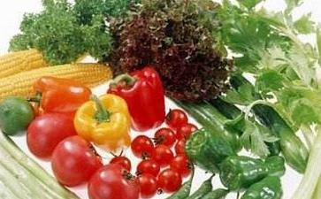

你知道人类有史以来最大的错误么
一、只有尊重其他生命，我们自己的生命才能得到尊重
尊重生命是这个星球乃至宇宙最基本的原则，因为生命是所有存在中最可贵的。很多
二、杀生是一种恶性循环
杀生总归是残忍的，没有人愿意被剥夺生命的权利。那么这个星球是怎么堕落成一个杀生的世界，究其原因是什么？佛教说：是因为冤冤相报的因果律在发生作用。人们因此沉沦
看看充斥暴力的影视媒介我们就知道，这个世界已经杀害成瘾，就像吸毒一样，不能自拔。
大家都知道毒品可以摧毁一个人的生命，杀生的
是以自我为中心的恶性循环，人类以自己的强大和自我利益为中心，奴役和灭绝其他的物种。即使有少数人觉醒，也无济于事。即使有一些开悟的人教导，也很难听从。人们可以
三、 动物的
杀害动物曾经只是旧时代少数不文明野蛮部落的专利，现在在西方社会表率下，被整个文明世界“发扬光大”。这个时代的人们为了满足自己欲望，不仅侵占了动物的生存空间，使很多物种灭绝。还开始大规模的牲畜养殖，不是为了让它们更好的生存，而是为了它们的肉。
“暴殄天物”这个词用在对待动物的行为上，已再恰当不过了。这个时代的所谓文明是那样的虚伪，公正只是对强权者，而不是弱者。当人们为纳粹集中营的同类的亡灵哀叹的时候，却没有对百千万倍多的动物们施舍一点点怜悯。就这样无数的生灵惨遭涂炭……
看看这些令人寒心数字吧，这里隐藏着多少痛苦、哀怨、恐惧与无助。被粉饰的食物面前，使人们根本感觉不到动物们的痛苦。
四、杀害动物在这个文明时代已演化成最大的错误
动物是仅次于人的造化的珍品，在这个宇宙孤寂的星球上，与人类为伴，带给了人类很多快乐和幸运，使这个星球富于生机和色彩。人们说我们文明了，杀害动物在这个所谓的文明时代，却被推到了极至。杀生在手段和数量上，已经超过以往任何一个时代。变得无所不用其极。这是人们缺少爱与智慧的表现，这是人们自我急剧膨胀的表现。无数的动物冤魂后面，所谓的文明变成了冠冕堂皇的伪装。任何事情都是有他的“度”，超过这个度事物就会发生质变。人们对待动物的不公，已经超过了造化所允许的“度”。有一种效应叫蝴蝶效应。是说一个蝴蝶在热带轻轻扇动一下翅膀，遥远的国家就可能造成一场飓风！杀害那么多物命，会不会成为宇宙的一场灾难？
杀生确实已经成为这个星球的最大危机，乃至成为地球濒于毁灭的首要原因。
五、上帝从来都是公正的，不公正的只是我们自己
如果你是上帝的话，你会不会容许有人无所顾忌的这样恣意杀害他们同一个星球上的邻居？
如果你是上帝，你会不会要抹平被杀者的怨恨呢？杀了人就需要偿命，动物就可以无辜被杀么？
六 、推行
现在这个世界，人类依靠谷物和植物蛋白替代品完全可以生存的更好、更
肉食是心灵的毒药
人与生存环境，与浩瀚的宇宙之间，彼此有密切的关系。宇宙至高的境界就像一片无止境的喜乐与宁静之洋，是一种最精细微妙的力量，也是爱、和平、纯洁和喜悦的呈现。当这种力量充满大自然时，周遭的环境是欢愉、宁静、清爽而有精神的。而慎选所吃的食物，将会意想不到地滋养身心，帮助我们身体健康和心灵纯净、平和。
我们所吃的食物，由于性质的不同，对人体也有不同的影响，许多专事修习
当动物将被宰杀时，由于恐慌、害怕、愤怒之气充塞在肉身中，若吃下了这些肉，等于是吃了许多的黑气进入体内，对于身体的健康或是心灵的纯净、稳定没有丝毫的帮助。
吃素能清净心田
清净的身与心，才能感受到宇宙的奥秘，承受宇宙能量的融合。清净的身是饮食要求非常重要，素食能让身体变得轻松、舒畅，当身体在比较纯净的状态时，心念较易调适。
「万法
许多业力的种子，都含藏在
吃素能让气脉畅通
气脉与我们的健康有莫大的关联，只要气脉畅通，此人必定非常健康，同时此人也是修行有成就的人。为什么呢？因为气脉的畅通与否，与业力有莫大的互动因素。中脉是业力的储藏所，恶因就是气脉不畅通的原因。当气脉的业障全部净除时，便可离开大幻化网，离开
白业越多，气脉越畅通；相反的，黑业越多，气脉越不畅通。而修行正是要不断的增加白业，减少黑业，所以当气脉越来越畅通时，健康与修行都得到了进步。
吃素，正是减少这些黑业累积在气脉的机会。因为当动物将被宰杀时，由于恐慌、害怕、愤怒之气充塞在肉身中，若吃下了这些肉，等于是吃了许多的黑气进入体内，对于身体的健康或是心灵的纯净、稳定没有丝毫的帮助。
行善越多，善因储藏进中脉，气脉就越畅通，所以行善可以净除气脉。吃素是慈悲自己及别人的善行。一切的行善，都能带来中脉的畅通。
吃素能让磁场祥和
一个人所散发出来的气，能够感召不同的磁场状况。气有多种，最起码可以分为黑白二种，也可以说是清、浊二种。黑业就感召黑气，即浊气，亦即业劫气。白业就感召白气，即清气，亦即智慧气。心气不二，智慧开展，一样能够感召白气，慈悲开展，一样可以感召白气。
一个人周遭磁场就是业力的显现。《大乘入
吃素容易入定
入定的状态是身心呈现一种安稳、放松的状况。气脉畅通，身自然放松；业力干扰少，
吃素，正是带我们的身心走向平和、喜悦、光明，因为我们的生存不是藉著它人的生命换取来的。血液中流著的是心安理得的安然，而不是暴躁不安的焦躁，自然容易进入与大自然同步的醒觉当中。
吃素长养大悲三昧
慈悲，是一个修行人最重要的美德。可以说越高的法门就越需要慈悲的人才能成就。怎么说呢？当一个人慈悲时，整个的身体都呈现出非常柔软的状态，所以我们常常听到柔软与慈悲合在一起，因为事实上身息心是互相影响的，当心慈悲了，身自然就柔软，故柔软慈悲，不只描述了心，也描述了身的状态。
吃素，正是慈悲的另一种呈现。因为一切众生从无始以来，在生死中轮回不息，没有不曾作过父母、兄弟、眷属乃至亲朋好友的，甚至轮回成鸟身、畜牲等的。因为愍念一切众生与自己都曾互为眷属过，每一位众生的生命和自己一样珍贵，都会怕痛、怕死，而肉都是从生命体来的。由此不忍之心而吃素，加上素食本身对于身体就有洁净的滋养作用，藉由身心两方面的配合，素食将可成就一位修